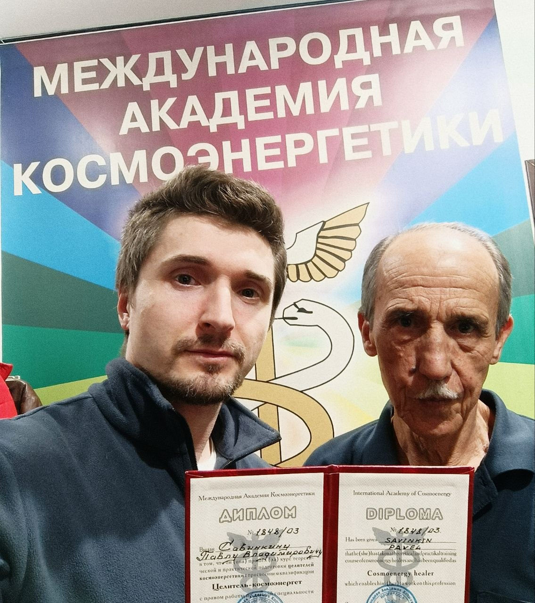

Практика · Резонанс · Исцеление
Тонкая работа с живой энергией человека
Я — Павел Савинкин, дипломированный целитель-космоэнергет. Помогаю вернуть собственную силу: очищаю биополе, восстанавливаю энергию через космические каналы.
scroll
Я — проводник,
а не врач.
«Лечить — это процесс без результата. Исцелить — значит избавить, очистить.»
Многие годы меня вело к этому: телесные практики, чистка пространства, осознанный подход к здоровью. 28 марта 2026 года я завершил первое официальное обучение в Международной академии космоэнергетики Марата Софина и получил диплом целителя-космоэнергета.
Космоэнергетика — духовная дисциплина, подтверждённая наукой, в том числе физикой. Её результаты ощутимы сразу. Основатель направления — академик В.А. Петров. Метод опирается на работу с космическими каналами и их вибрациями.
Теперь я могу официально работать и помогать людям. Это только начало пути — учусь каждый день и с удовольствием обмениваюсь практикой услугу за услугу с другими специалистами.
- 2026 Диплом академии космоэнергетики Марата Софина
- 7+ освоенных целительских каналов
- ∞ состояний, поддающихся исцелению через энергию
Каждое заболевание — последствие нарушения естественного течения энергии. Я работаю с этими нарушениями: на уровне биополя, тонких тел, чакр и каналов. В первые сеансы тело включает свой режим самоисцеления.
-
01
Очищение биополя
Снимаю порчи, сглазы, проклятия, привороты и их энергетические последствия — то общее недомогание и хронику, у которой нет медицинской причины.
-
02
Синхронизация чакр
Успокаиваю нервную систему через очищение и синхронизацию чакр — нервных сплетений и узлов. Мысли становятся ясными, тело — лёгким.
-
03
Регенерация тела
Запускаю процесс естественного восстановления: пищеварительная, костная, нервная, эндокринная, дыхательная, сердечно-сосудистая, лимфатическая, репродуктивная системы.
-
04
Снятие сущностей
Лярвы, инкубы, сукубы, мыслеформы — астральные паразиты, крадущие силу. Убираются высоковибрационными потоками за 15–20 минут.
-
05
Энергетическая защита
Ставлю защиту от недоброжелателей и энерговампиров. Ты чувствуешь её сам и учишься поддерживать в рабочем состоянии.
-
06
Работа с болью
Головные боли, мигрени, метеозависимость, мышечные блоки, женские заболевания, бесплодие, нарушения щитовидной железы и ЖКТ, воспаления, травмы.

«Если у человека стабильное сильное энергополе — яркая светлая аура — то и его тело абсолютно здорово. Заболевание сначала рождается на уровне биополя, а потом приходит в тело.»
— Павел СавинкинПод каждое состояние существует свой космический канал — частота, которая откликается, очищает и восстанавливает. Подключение работает удалённо: расстояние не имеет значения, потому что вибрация не знает километров.
- Шаон женское здоровье · яичники, миомы, кисты, щитовидная железа · камни в почках и желчном · 3-я, 4-я и 5-я чакры
- Очищение снятие порч, сглазов, проклятий, приворотов · вывод накопленного негатива · возврат собственной энергии
- Восстановление после выгорания, перегрузок, потери ориентира · «как заменили батарейку на новую и более ёмкую»
- Метеочистка избавление от метеозависимости · «подобное притягивает подобное» — поднимаем тональность вибраций
- Защита энергетический щит от вампиров, токсичного окружения и астральных подключений
- Индивидуально то, что не поддаётся традиционному лечению или мучает долгие годы — рассматривается лично
В организме человека каждую секунду самовосстанавливается 3,8 миллиона клеток. Тело умеет исцелять себя само — мы просто разучились его слушать.
о регенерации
В G5 и МРТ мы верим, а в энергетические каналы и эфир — нет. В радиоволны верим, а в нейронную связь между людьми и космосом — нет. Двойные понятия, дамы и господа.
о квантовой физике
Подключаешься к нужному каналу, начинаешь с ним вибрировать на одной волне, используешь его энергию. Управляешь и направляешь потоки мыслями. Чем больше практики — тем мощнее результат.
о резонансе
Магнитная буря не хочет тебя погубить. В ней буря разных вибраций, но ты «ловишь» только подобные своим. Чисти биополе — и метеозависимость уйдёт.
о тональности
Восстановление энергии и Силы
Освобождение от чужих и чужеродных энергий. Лёгкость в теле. Возврат концентрации, смысла и радости жизни.
- почувствуешь поток светлой Божественной энергии
- вернётся здоровый полноценный сон
- уйдут негативные программы и тяжесть
- включится режим самоисцеления тела
- «снимешь с себя старую кожу»
Расстояние не имеет значения. Все взаимодействия — в рамках квантовой физики и энергии Создателя.
Космоэнергетика —
добрая Сила.
Пусть твоё биополе будет ярким,
а тело — здоровым.